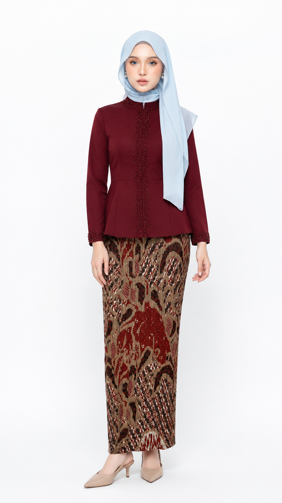
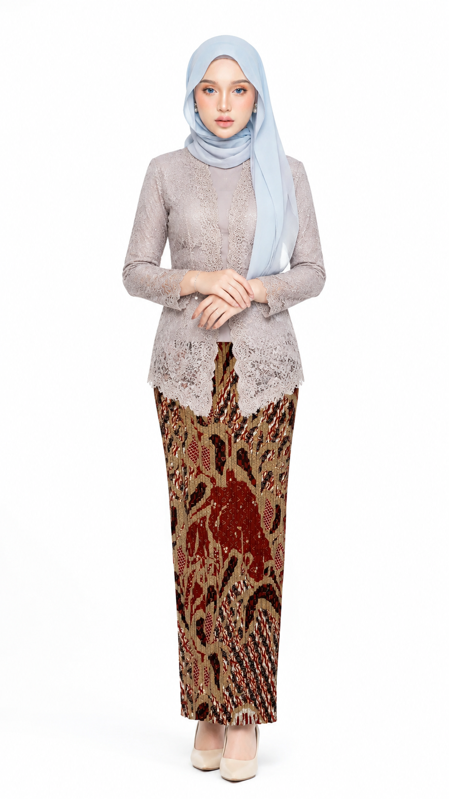

01 · 安装与使用 / Install & use
下载仓库ZIP，备份已有技能后，将 skills 下的技能目录与 _shared 目录复制到你的 .codex/skills，保持相对结构，再开启新任务。
Download the repository ZIP. Back up existing files, copy the skill folder and _shared folder into .codex/skills, preserve their relative structure, and open a new task.
中文指令
使用 $douyin-mirror-outfit-storyboard 完成完整流程。 图1商品、图2成年模特、图3背景。 生成9:16模特图、10镜头分镜、10秒动作表、 Seedance中文提示词、OmniFlash英文提示词、 TikTok文案：Hook + TITLE + CAPTION + Hashtags。 OmniFlash只在开头集中标注一次@。 不添加包包、画面文字或水印。 先检查模特图，通过后再生成分镜。
English command
Use $douyin-mirror-outfit-storyboard. Image 1: product; image 2: adult model; image 3: room. Create a 9:16 model image, 10-shot storyboard, 10-second action plan, Chinese Seedance prompt, English OmniFlash prompt and TikTok copy: Hook + TITLE + CAPTION + hashtags. Mention references once at the start of OmniFlash. No added bags, on-image text or watermarks. Review the model image before storyboarding.
旧安装脚本会覆盖同名文件，先备份，尤其是共用约束。 / The existing installer overwrites matching files. Back up first, especially shared constraints.
02 · 全流程 / The full workflow
Assign roles→ 搭配与覆盖
Style & coverage→ 母版 + 检查
Model + review→ 分镜 + 检查
Storyboard + review→ 提示词与文案
Prompts & copy
检查失败 → 定点修复（最多两轮）→ 仍不合格则标记草稿。不要拿错图继续锁商品。视频生成是另一步，不等于交付提示词。
Failed review → targeted repair (up to two rounds) → unresolved outputs remain drafts. Failed images never redefine product facts. Video rendering is separate from prompt delivery.
03 · 看图学检查 / Learn to review

从脸到鞋 / Face to shoes
先看身份、头巾、袖口、腰头、下摆与鞋，再看房间和持机手。
Check identity, headwear, cuffs, waist, hems and shoes, then the room and phone hand.

原始参考优先 / Originals win
分镜负责动作，不负责重新设计商品。配套件不遮住主商品，禁止文字时分镜也不放编号。
Storyboards guide motion, not redesign. Supporting pieces must not hide the hero. No-text requests also exclude panel numbers.
两图是既有生成风格示意，不是准确度验收证明或十格分镜。 / These are existing generated style illustrations—not certified matches or ten-panel storyboards.
04 · 发布前检查 / Before publishing
参考与商品 / References & product
确认实际绑定，而不只是写@。原商品优先；不添加纹理、不变色、不改版型。照片不证明材质功能。
Check actual attachment bindings. Preserve original details; do not invent textures, colour changes or material claims.
人物与覆盖 / Identity & coverage
成年人物、同一身份；保留原有头巾与明确覆盖，不推断宗教或族裔。肖像未显示的身材不能声称精准还原。
Adult identity, consistent headwear and requested coverage. Do not infer religion or ethnicity or claim unseen body proportions are verified.
画面文字禁止不影响独立交付 TikTok 文案。标题吸引注意，正文描述真实可见细节，不保证爆款。
No on-screen text does not prevent separate TikTok copy. Write engaging titles and evidence-based captions without promising virality.
05 · 继续阅读 / Continue learning
完整双语Markdown教程在同一仓库；离线阅读可用Markdown阅读器打开。 / The full bilingual Markdown tutorials are included; use a Markdown reader offline.